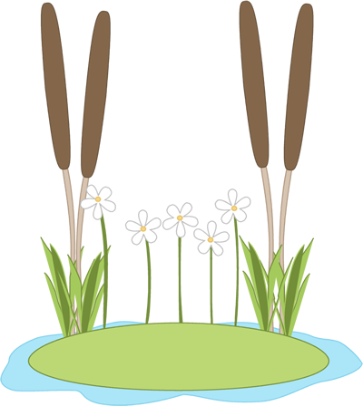

Kindergarteners
Kindergarteners are focusing on the properties of sand, silt and clay.
Students explore the differences in particle size, permeability,
and habitat quality. Students designed a habitat model for
hibernating frogs. In the spring, they will check the Thurston
Pond to verify mud for the frogs to hibernate.